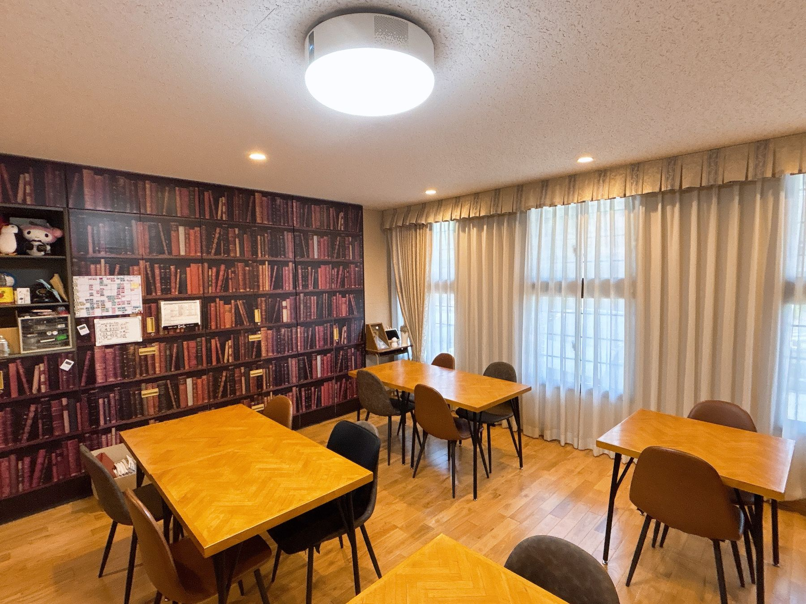
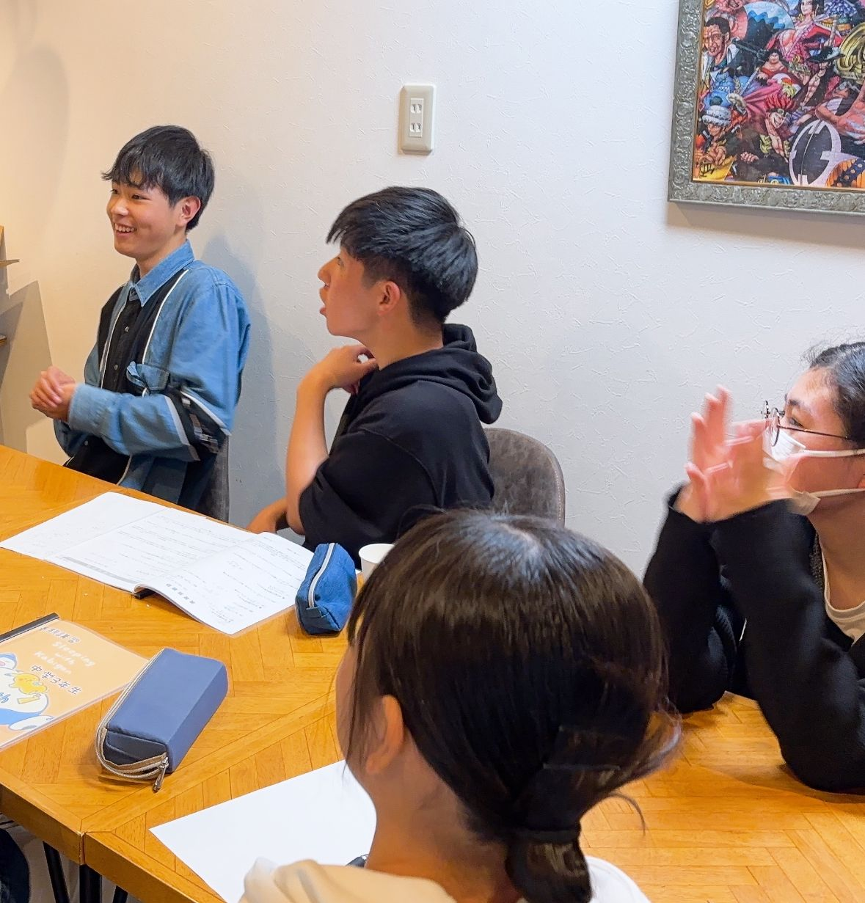

☕ カフェのような空間
机に向かうことだけを求めるのではなく、気持ちを整えて学びに向かえる空気をつくっています。
DL SPACE
「塾っぽさ」が少し苦手でも、ここなら落ち着ける。
DLは、集中する時間と、ほっとできる時間の両方を大切にしています。

机に向かうことだけを求めるのではなく、気持ちを整えて学びに向かえる空気をつくっています。
授業の日だけでなく、自分の課題に取り組む時間も大切に。質問したいとき、少し背中を押してほしいときにも寄り添います。
先生と生徒という関係だけではなく、対話しながら一緒に考える。DLが「学びと居場所」を掲げる理由です。



VISIT DL
保護者様のみのご相談や、教室見学だけでも大丈夫です。
無料体験・見学のお問い合わせ